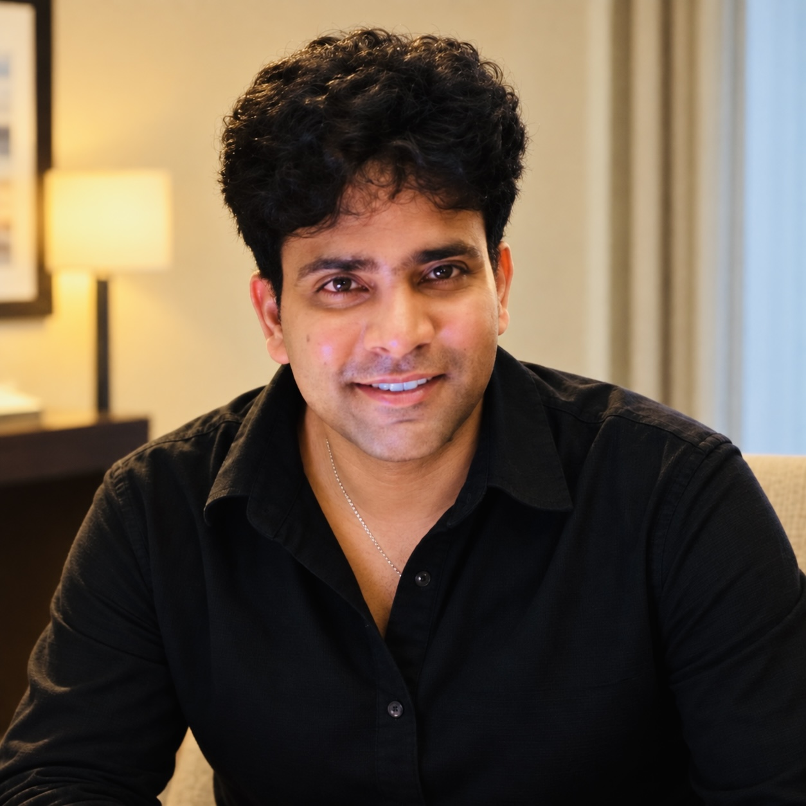

CHASE
Senior Forward Deployed AI Engineer / AI Solutions Architect
Agentic AI · Secure enterprise integration · Production deploymentVIJAY THOTA · AN AI ENGINEERING ORIGINAL
Senior Forward Deployed AI Engineer & AI Solutions Architect. I turn complex enterprise challenges into secure, production-grade agentic AI systems.

01 / THE BUILDERFrom enterprise-scale AI deployments to independent products. Each chapter is built around problems, systems and outcomes.
COLLECTION 01
Not just a prototype.
A system that survives production.
COLLECTION 02
COLLECTION 03
THE ORIGIN STORY
Senior Forward Deployed AI Engineer / AI Solutions Architect
Agentic AI · Secure enterprise integration · Production deploymentAI Solutions Engineer / Intelligent Automation Architect
Predictive pipelines · Enterprise retrieval · Cloud infrastructureSoftware Engineer / AI Platform Engineer
Backend services · Enterprise APIs · Cloud-native engineeringFounder / AI System Architect
Emotion AI · Agent memory · Human-centered product visionTHE TOOLKIT
THE LEARNING ARCHIVE
Selected professional programs and course completions. Each certificate opens its original uploaded PDF; course certificates are not presented as vendor exams.
THE NEXT CHAPTER
Enterprise AI architecture, forward deployed engineering, agent systems and ambitious new products.